How causal inference lifts augmented analytics beyond flatland
June 2021
Published on Fri 26 Aug, 22
Michael Klaput, Ph.D.
Co-founder & CTO
Causal inference techniques along with business analytics approaches unravel what truly changes your KPIs, while predictive modeling falls flat.
If the world was two-dimensional, life would be very odd indeed. Think about it: The earth would not be a sphere but a circle — just like all other stars and planets in a 2D-universe. Beings would be flattened, too, navigating a plane landscape and existence. For example, to pass somebody on the street, you would have to jump over that person as there would be no depth whatsoever. For the same reason, to just look behind you, you would literally have to turn yourself upside down. Fortunately, this is not the world we live in. But unfortunately, this is the basis on which most enterprises are run today — perhaps even yours. In any technology-driven business, the quality of your Decision-making is inevitably based on the quality of your data insights. However, in too many companies, those ’insights’ are effectively two-dimensional: flat, impractical, and hopelessly inconclusive.
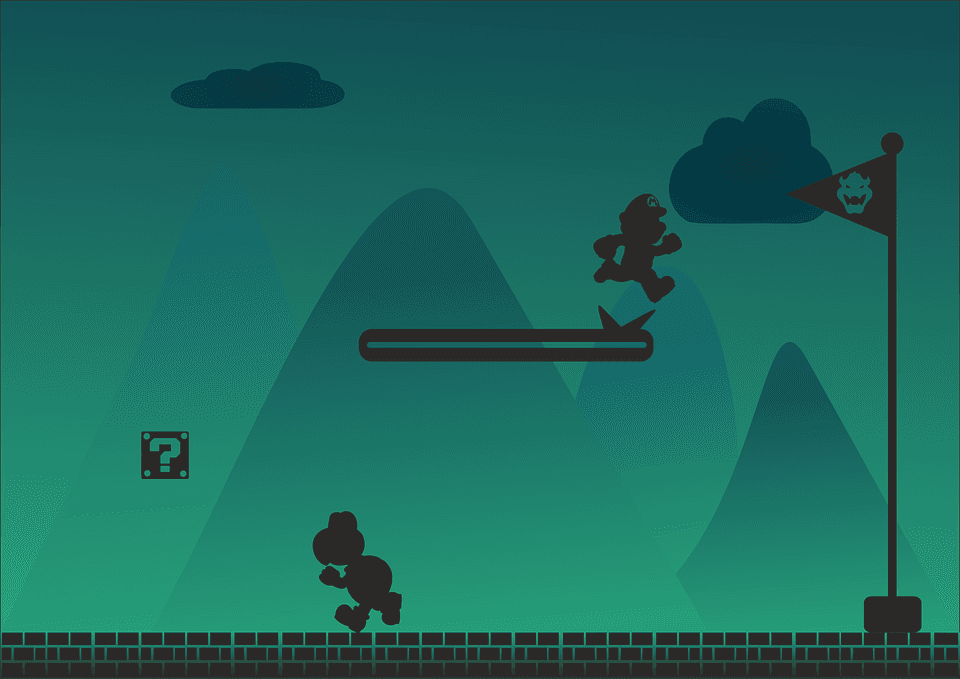
Businesses usually measure their performance in terms of a KPI. It has thus become an objective in data analytics to find the best predictive models of future KPI values given historical data. While these models might perform surprisingly well, extracting value out of them is just as hard. Aside from a lack of explainability, this is also because predictive models are unable to capture reality and are limited to low-dimensional explanations. In this article, we will give two arguments why this is the case based on bad scaling and unrealistic assumptions made in most predictive models.
But why bother? It is not the well-performing model that improves business performance. Instead, the only way to improve a business is through decisions, which should ultimately be done by a human. The objective of data analytics in business should be to inform decisions by uncovering insights. Unfortunately, these are hidden in your data like needles in a haystack. This far from trivial problem motivated a relatively young branch of data analytics has been coined augmented analytics and has been pushed in a recent Gartner report.
We want to challenge the perception that predictive models should be the default option used to inform business decisions. They introduce a costly detour in the search for insights, and might even render it practically infeasible. We will highlight in a simple problem that predictive modeling can offer only little aside from a massive overhead. Instead, we will try to mimic how a business analyst would operate. This will naturally bring us to methods from causal inference.
We will consider the problem of diagnosing errors in regression models in big data scenarios. Most of the readers should have encountered the following scenario: 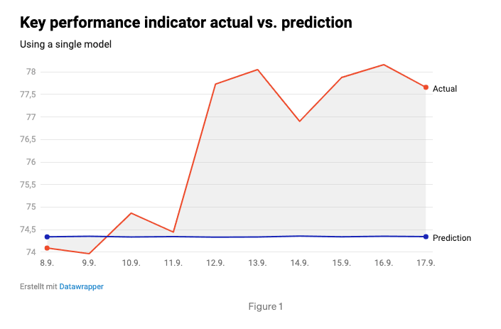
Clearly, there has been an impactful change in the KPI that seems to persist for the time being. On the technical side, a reasonable reaction would be to retrain your predictive model on the data after the change point. Do you agree? If so, maybe keep this in mind. 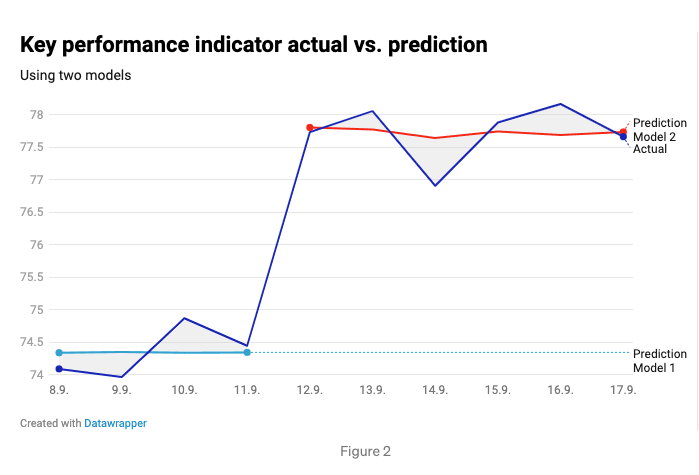 The good news is that your model seems to be accurate. The bad news is that your manager will inevitably ask what happened to the KPI. But do not be afraid. This is an ideal situation for proving your value to the company. Can you identify the reason behind this change? Can you uncover insights that will inform the correct decision?
Let's say your company’s dataset looks something like this: 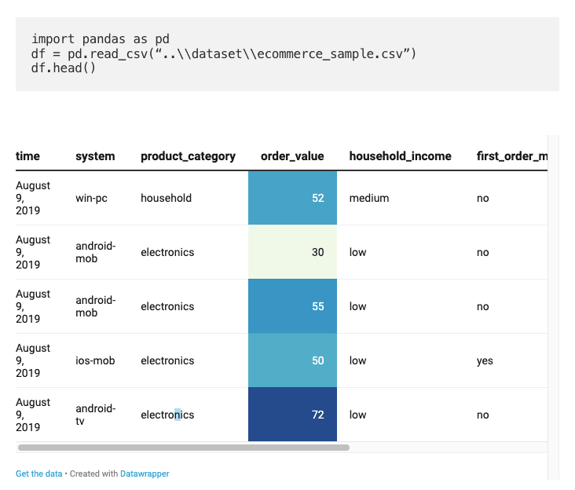
Let us further assume that you are dealing with the simplest case: The KPI values of data points before and after the jump are perfectly fit using a linear regression model. Here, you are dealing with categorical data which you need to handle appropriately to use in the regression. A standard approach for this is one-hot encoding of categorical values: for each category value, you introduce a feature that can be either true or false. For example, in the dataset above you would define the feature that can be either true or false. For example, in the dataset above you would define the feature customer_country == Germany. To finally enable feature selection, it is necessary to use a form of regularisation. Here, you will use lasso regularisation (with ten-fold cross-validation).
After training two lasso regularised linear regression models, one before and one after the jump, you can look at a ranked list of feature weight differences between these.
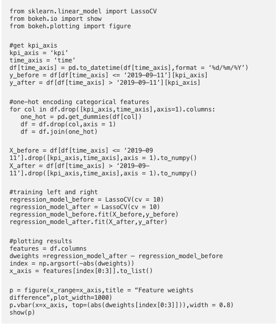 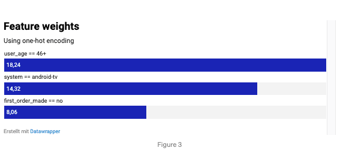 It looks like subgroups such as android customers or customers older than 46+ performed differently before and after the jump. Great, looks like you found the reasons for the KPI jump … or did you?
In fact, this is a more non-trivial situation than we have appreciated so far. Imagine presenting this to the KPI owner. They will be very happy that you have delivered them reasons for the KPI change and they will now be wondering about what to do based on this information. It will automatically lead them to questions like the following: “Are the actual drivers for the KPI change all android-tv customers, all customers older 46, and all customers who made a purchase before? Maybe it could be the repeat customers older than 46 and the android-tv customers … or the android-tv customers who purchased something before? Worse, are there maybe other combinations of features which you have missed?”
Therefore, to be able to more confidently answer such questions, you would have to repeat your regression analysis with more complex one-hot encoded features … now representing finer subgroups than before. Thereby, you are searching among deeper subgroups of the dataset, see Figure 6, with new features like customer_age == 46+ AND first_order_made == yes, customer_age == 18–21 AND first_order_made == no.
Again these subgroups enter via one-hot encoding. This is obviously problematic, as you are now falling victim to the curse of dimensionality. It is the era of big data, and you just increased your number of features by a factorial amount. A piece of code that can be used to generate these refined subgroups is
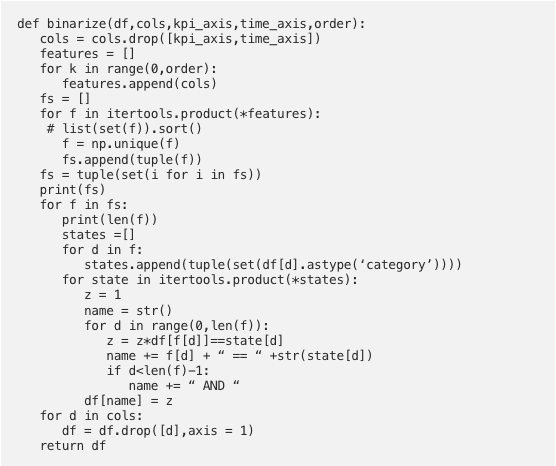 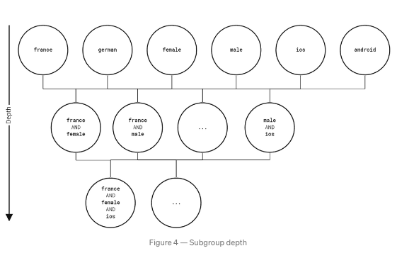
Remember that linear regression is based on an inversion of a covariance matrix among all features - which scales O(d³), with d being the number of features, i.e. in our case the number of possible subgroups. This introduces significant opportunity cost in comparison to non-predictive feature selection methods — as will be discussed later.
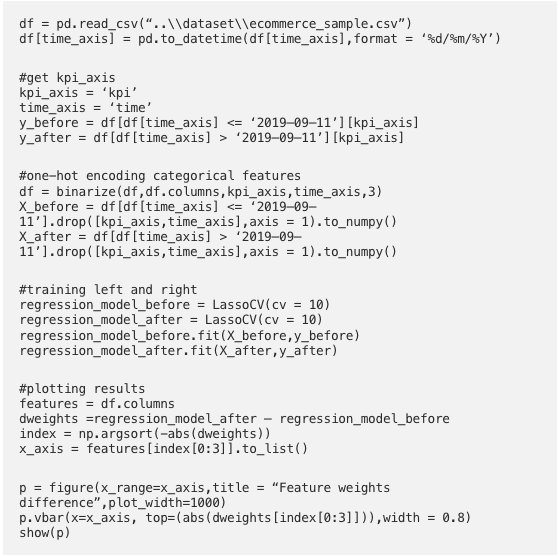 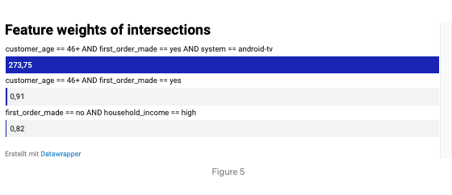
After some time your computation finishes. While your earlier computation took just 0.1 seconds, searching for third-order features already took over a minute. But it seems to be worth it. You find that the number of groups driving the KPI change was actually one, see Figure 7. Presenting this insight to your manager, he could quickly point to an update that directly affected the subgroup you reported.
While your regression approach finally worked out - it took extremely long to compute resulting in opportunity cost to your company. In a realistic scenario of big data, your approach would have failed horribly. Additionally, original sets containing only shallow subgroups painted an incorrect picture. Only after refining sets and enormous computational effort, you could pinpoint the actual subgroup that drove the jump in the KPI.
This begs a couple of questions:
While answering all these questions is out-of-scope for this post, we will offer a new point-of-view that can help to resolve these issues. For this, we will develop an approach to feature selection that improves on linear regression. Augmented analytics depends on it.
Let’s take a step back … what happened here? You started off with a predictive model, and you saw that it could neither predict nor explain the observed jump in the KPI. Why is that? Because predictive models are unable to capture reality. They assume that all data is independently and identically distributed. However, in real-life applications, this is often incorrect, as this example shows. Data before and after the jump was generated under different conditions. You even intuitively made use of this fact, when you used two separate predictive models which (after some tricks) helped us to uncover the reason for that jump.
As you had to give up on prediction and ultimately did not predict anything, what did the prediction models actually do for you? If you think about it, the key is that you are not interested in predicting the KPI as a function of all possible subgroups - you are interested in subgroups affecting the KPI! Thus, to search for insights at deeper levels you have to get away from predictive modeling. This is where the data scientist can learn from the business analyst.
A business analyst searches for insights through dashboards containing meaningful summaries of data. Instead of correlating all features together, as in the regression approach above, the business analyst will try to pinpoint what changes happened in the data based on summaries (like means, histograms, or metrics) by iteratively filtering the data for different conditions. Most importantly, the business analyst will never have to look at all features at once. How do you teach a machine to do that? How can you learn from a business analyst?
Let us formalize the above in mathematical notation. Let X be a subgroup, e.g. X = customer_age == 46+ AND first_order_made == yes and
some summary of the KPI distributions before and after the jump in the KPI. Then, you introduce conditional summaries
where you compute summaries of subsets of KPI values for which X is true. All that our method needs to do now, is to compute conditional summaries for each subgroup and rank them. I want to stress, that in practice these abstract summaries can be objects as means, histograms e.t.c.
The procedure detailed above is actually a common technique from causal inference. You thereby implicitly changed our point of view. Now, you consider the mysterious jump in the KPI as an intervention, that is now assumed to have happened due to external or internal treatments. An example for an external treatment might be the holiday season, an internal treatment might be an ad campaign, a change in pricing, or, as in our case a software update. You are thus explicitly lifting the wrong assumption that all data is independently and identically distributed. You are now searching for subgroups that are causal to the change in KPI.
Now that you have a model of how a business analyst operates, let us proceed with the actual implementation. For now, you will use a standard summary used in causal inference called Conditional Average Treatment Effect (CATE), for which our summary becomes
The CATE corresponds to the change in the mean of the KPI, conditioned on that subgroup X is true. Ranking by magnitude then gives us the correct subgroup as a result. To detect multiple subgroups, we repeat this procedure after removing the best performing subgroup after each iteration:
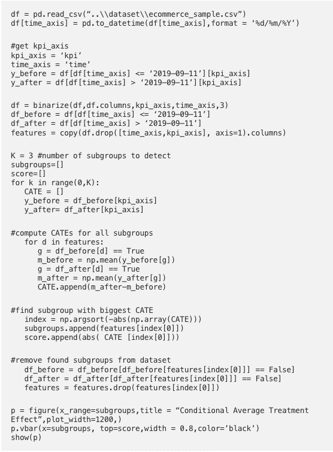 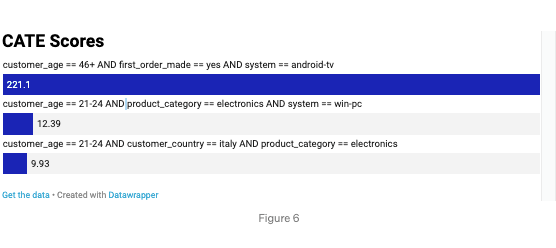 This takes a fraction of the cost of our predictive model. The computation for first-order features took just 0.02 seconds, searching for third-order features took less than a second.
Let us take a step back and compare this approach with the earlier one based on regression and what their respective objectives are. Feature selection via regression answers the question: ” Which subgroups best predict your KPI?”. While taking the view of causal inference answers the question: “Which subgroups had the biggest causal effect on the KPI?”. Comparing run-times of a naive implementation of CATE with the optimised sklearn implementation of linear regression in Figure 9, we find that they lie order of magnitudes apart. This makes it clear that these questions, while superficially similar, have fundamental differences.
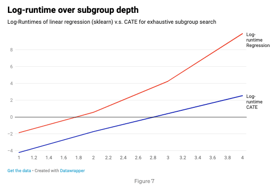
Predictive models have strong shortcomings as means to understand KPI changes, especially in multi-dimensional contexts. These models fundamentally answer the wrong questions under the wrong assumptions. Instead, business analytics focuses on why did something happen rather than what will happen. Having their mind free of the auxiliary task of predicting future KPI values, analytics finds reasons in the data to understand why the KPI changed, trying to find the answers for the right question.
Be wary next time you want to explain anything. Firstly, you should ask the right question. In addition, multi-dimensional contexts require a scalable technique based on causal inference and business analytics methods. This is our mission at Kausa: scale business analytics logic and couple it with causal inference to provide the right answers to KPI changes.
PS: Code and data to reproduce results from this article are available in our Github repository.
Michael Klaput is Co-Founder and Chief Technology Officer and Dominik Linzner is Causal Inference Engineer at Kausa.
Kausa accelerates data exploration, delivering actionable insights in seconds by testing all hypotheses comprehensively and continuously.
Case Studies